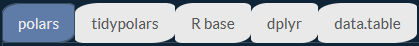

Cookbook Polars for R
Preface
Welcome to the Polars cookbook for R users. The goal of the cookbook is to provide solutions to common tasks and problems in using Polars with R. It allows R users using their usual packages to quickly get the syntax required to use Polars with R.
It is structured around side-by-side comparisons between polars, R base, dplyr, tidyr and data.table.

This book is not a substitute for the official documentation of the rpolars project which is the definitive reference on the subject. It is simply intended to illustrate my use of Polars with R and can be a complementary to the official Polars documentation.
Most of the code in these pages can be copied and pasted into the R command window if you want to see them in action.
What is Polars ?
Polars is a very fast and elegant dataframe library that does the same sort of thing as the main data manipulation packages in R including dplyr and data.table.
Most of this book is structured examples of Polars, dplyr and data.table idiomatic code, with comments on the API and performance of the three.
Who is this for?
This is not a beginner’s introduction to data programming, though you certainly don’t need to be an expert to read it. If you have some familiarity with any dataframe library, most of the examples should make sense, but if you’re familiar with dplyr or data.table they’ll make even more sense because all the Polars code is accompanied by the equivalent code.
For users of Python and in particular Pandas, you can consult this excellent book which was the inspiration for the one you are reading now.
Contributing
This book is free and open source, so please do open an issue if you notice a problem!